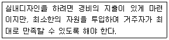

실내건축기능사 (2009-01-18 기출문제)
1과목: 실내디자인
1. 상점의 판매형태에 대한 설명 중 옳지 않은 것은?
- 대면판매는 종업원의 정위치를 정하기가 용이하다.
- 대면판매를 하는 상품은 일반적으로 시계, 귀금속, 안경 등 소형 고가품이다.
- 측면판매는 고객의 충동적 구매를 유도하는 경우가 많다.
- 측면판매는 상품에 대한 설명이나 포장작업 등이 용이하다.
(정답률: 75%)

2. 인간의 주의력에 의해 감지되는 시각적 무게의 평형상태를 의미하는 디자인 원리는?
- 균형
- 비례
- 대립
- 대비
(정답률: 89%)
3. 실내공간을 구성하는 기본 요소 중 바닥에 대한 설명으로 옳은 것은?
- 같은 층에서 바닥에 차를 두는 경우, 단의 높이가 정상적인 치수보다 너무 낮은 경우에는 안전상 위험이 따르므로 유의하여야 한다.
- 같은 층에서 바닥에 차를 두는 경우는 바닥면이 좁을 때 주로 사용된다.
- 같은 층에서 바닥에 차를 두는 경우가 바닥에 차를 두지 않는 경우보다 일반적으로 실내를 더 넓어 보이게 한다.
- 어린이나 노인이 있는 가정에서는 바닥차가 있는 편이 안정성면에서 더 바람직하다.
(정답률: 70%)
4. 다음 중 공간이 지나치게 넓은 경우 공간을 아늑하고 안정감 있게 보이게 하는 방법으로 가장 알맞은 것은?
- 키가 큰 가구를 이용하여 공간을 분할한다.
- 창이나 문 등의 개구부를 크게 한다.
- 유리나 플라스틱으로 된 가구를 이용하여 시선이 차단 되지 않게 한다.
- 난색보다는 한색을 사용하고, 조명으로 천장이나 바닥 부분을 밝게 한다.
(정답률: 83%)
5. LDK형 단위주거에서 D가 의미하는 것은?
- 거실
- 식당
- 부엌
- 화장실
(정답률: 87%)
6. 개구부(창과 문)의 역할에 대한 설명 중 옳지 않은 것은?
- 문은 공간과 다른 공간을 연결시킨다.
- 창은 통풍과 채광을 가능하게 한다.
- 창은 가구, 조명 등 실내에 놓여지는 설치물에 대한 배경이 된다.
- 창은 조망을 가능하게 한다.
(정답률: 89%)
7. 실내디자인에서 추구하는 목표 중 다음 설명과 가장 관계가 깊은 것은?

- 기능성
- 경제성
- 개성
- 심미성
(정답률: 86%)
8. 다음 중 실내디자인의 개념과 가장 거리가 먼 것은?
- 실내공간을 아름답고 능률적이며 쾌적한 환경으로 창조 하는 것이다.
- 내부공간을 사용하고자 하는 목적과 요구기능을 충족시키는 것이다.
- 개성 있고 아름다운 공간을 연출하는 디자인 행위이다.
- 공간과 형태는 고려하지 않고 조명, 텍스텨(texture), 색채 등과 같은 요소를 의식적으로 조정하는 것이다.
(정답률: 86%)
9. 다음 중 면에 대한 설명으로 가장 알맞은 것은?
- 점의 궤적이다.
- 폭과 부피가 없다.
- 길이의 1차원만을 가지며 방향성이 있다.
- 절단에 의해 새로운 면을 얻을수 있다.
(정답률: 69%)
10. 다음 중 프라이버시에 대한 설명으로 옳지 않은 것은?
- 주거공간은 가족 생활의 프라이버시는 물론, 거주하는 개인의 프라이버시가 유지되도록 계획되어야 한다.
- 프라이버시란 개인이나 집단이 타인과의 상화 작용을 선택적으로 통제하거나 조절하는 것을 말한다.
- 가족수가 많은 경우 주거공간을 개방형 공간계획으로 하는 것이 프라이버시를 유지하기에 좋다.
- 주거공간의 프라이버시는 공간의 구성, 벽이나 천장의 구조와 재료, 창이나 문의 종류와 위치 등에 의해 많은 영향을 받는다.
(정답률: 93%)
11. 주거공간 중 부엌에 대한 설명으로 옳지 않은 것은?
- 부엌의 색채는 동일계의 유사색을 사용하고 천장→벽→바닥의 순으로 어둡게 하면 통일감과 안정감을 줄 수 있다.
- 부엌은 그 기능이 연관성이 있는 식당과 거실에 자연스럽게 연결될 수 있도록 배치하는 것이 좋다.
- 부엌에서 주부의 행동반경을 넓게 하기 위해 작업 동선은 길게 하는 것이 좋다.
- 부엌의 작업대 배치 유형 중 일렬형은 부엌의 폭이 좁거나 공간의 여유가 없는 소규모 주택에 적합하다.
(정답률: 91%)
12. 반복(Repetition), 점층(Gradation), 변이(Transition)와 가장 관계가 깊은 실내 디자인의 구성 원리는?
- 리듬
- 균형
- 강조
- 통일
(정답률: 86%)
13. 천장, 벽의 구조체에 의해 광원의 빛이 천장 또는 벽면으로 가려지게 하여 반사광으로 간접 조명하는 방식은?
- 발란스 조명
- 코브 조명
- 코니스 조명
- 광천장 조명
(정답률: 62%)
14. 다음과 같은 조형효과를 갖는 선의 종류는?(문제 오류로 보기 그림이 없습니다. 정확한 내용을 아시는분 께서는 오류신고를 통하여 내용 작성 부탁 드립니다. 정답은 1번 입니다.)
- 수직선
- 수평선
- 사선
- 곡선
(정답률: 58%)
15. 다음 중 실용적 장식품에 속하지 않는 것은?
- 모형
- 벽시계
- 스탠드 램프
- 스크린
(정답률: 80%)
16. 다음 설명이 의미하는 열의 이동 방법은? 어떤 물체에 발생하는 열에너지가 전달 매개체가 없이 직접 다른 물체에 도달하는것
- 열관류
- 전도
- 대류
- 복사
(정답률: 47%)
17. 다음 중 잔향시간에 대한 설명으로 옳은 것은?
- 잔향시간은 실의 용적에 반비례한다.
- 잔향시간은 실의 형태에 크게 영향을 받는다.
- 잔향시간은 실의 흡음력에 반비례한다.
- 잔향시간이 없으면 음량이 많아져서 음을 듣기 어렵게 된다.
(정답률: 64%)
18. 실내환기 횟수를 계산하는 공식으로 옳은 것은?(단, n:환기횟수(회/h), V:소요 공기량(m3/h), R:실공기의 체적(m3))
- n = V/R
- n = R/V
- n = V*R
- n = V+R
(정답률: 57%)
19. 다음 중 실내 환경에서 기후적인 조건을 좌우하는 가장 주된 요소는?
- 공기의 온도
- 기류
- 습도
- 주위벽의 열복사
(정답률: 64%)
20. 다음 중 실내 인공조명 설계시 가장 먼저 해야 하는 것은?
- 소요조도의 결정
- 조명방식의 선정
- 광원배치의 결정
- 조명기구의 결정
(정답률: 81%)
2과목: 실내환경
21. 다음 중 목재의 일반적인 성질에 관한 설명으로 옳은 것은?
- 목재의 기건함수율은 계절, 장소, 기후와 상관없이 항상 동일하다.
- 섬유포화점 이상의 함수상태에서는 함수율의 증감에 거의 비례하여 신축을 일으킨다.
- 열전도도가 낮아 여러 가지 보온재료로 사용된다.
- 섬유포화점 이상의 함수상태에서는 함수율의 증가에 따라 강도는 현저히 감소한다.
(정답률: 58%)
22. 쇄석을 종석으로 하여 시멘트에 안료를 섞어 진동기로 다진 후 판상으로 성형한 것으로서 자연석과 유사하게 만든 수장재료는?
- 석면 시멘트판
- 목모 시멘트판
- 인조석판
- 대리석판
(정답률: 74%)
23. 1종 점토벽돌의 최소 압축강도는? (KS기준)(오류 신고가 접수된 문제입니다. 반드시 정답과 해설을 확인하시기 바랍니다.)
- 10.78 N/mm2
- 20.59 N/mm2
- 22.54 N/mm2
- 28.78 N/mm2
(정답률: 52%)
24. 다음 중 건축용 단열재에 속하지 않는 것은?
- 유리 섬유
- 석고 플라스터
- 암면
- 폴리 우레탄폼
(정답률: 46%)
25. 고온소성의 무수석고를 특별한 화학처리를 한 것으로, 킨스시멘트라고도 불리우는 것은?
- 경석고 플라스터
- 순석고 플라스터
- 혼합석고 플라스터
- 보드용 석고플라스터
(정답률: 45%)
26. 다음 중 목재 제품과 용도의 연결이 옳지 않은 것은?
- 집성목재 : 목구조의 기둥, 보, 아치 등의 구조재
- 플로링 판 : 주택의 마루재
- 코르크 판 : 천장, 안벽의 흡음판
- 코펜하겐 리브판 : 건축물의 외장재
(정답률: 76%)
27. 각종 도료의 일반적인 성질에 대한 설명 중 옳지 않은 것은?
- 합성수지도료는 건조시간이 빠르고 도막이 견고하다.
- 수성페인트는 내수성이 없고 광택이 없는 것이 특징이다.
- 에나멜페인트는 도막이 견고하고 내후성과 내수성이 좋다.
- 유성페인트는 내후성과 내알칼리성이 뛰어나다.
(정답률: 60%)
28. 투명도가 매우 높은 것으로 항공기의 방풍 유리에 사용되며 유기유리라고도 불리우는 합성 수지는?
- 염화비닐 수지
- 폴리에틸렌 수지
- 메타크릴 수지
- 에폭시 수지
(정답률: 51%)
29. 결합제로 폴리머를 사용한 콘크리트로서 경화제를 가한 액상수지를 골재와 배합하여 제조한 것은?
- 수밀 콘크리트
- 프리팩트 콘크리트
- 레진 콘크리트
- 서중 콘크리트
(정답률: 50%)
30. 고로시멘트에 대한 설명으로 옳은 것은?
- 수화열량이 크다.
- 매스콘크리트용으로 사용할 수 있다.
- 초기강도가 크고 장기 강도가 낮다.
- 경화건조수축이 없으며 해수 등에 대한 내식성이 작다.
(정답률: 43%)
3과목: 실내건축재료
31. 다음 중 콘크리트용 골재로서 요구되는 성질이 아닌 것은?
- 잔골재의 염분허용한도는 0.1% 이하일 것
- 골재의 입형은 가능한 한 편평, 세장하지 않을 것
- 입도는 조립에서 세립까지 연속적으로 균등히 혼합되어 있을 것
- 골재의 강도는 콘크리트 중의 경화시멘트 페이스트의 강도 이상일 것
(정답률: 32%)
32. 목재 또는 기타 식물질을 절삭 또는 파쇄하여 소편으로 하여 충분히 건조시킨 후, 합성수지 접착제와 같은 유기질 접착제를 첨가하여 열압제판한 목재 제품은?
- 파티클 보드
- 합판
- 파키트 패널
- 파키트 보드
(정답률: 77%)
33. 다음 중 석재 사용상의 주의점에 대한 설명으로 옳지 않은 것은?
- 산출량을 조사하여 동일건축물에는 동일석재로 시공하도록 한다.
- 압축강도가 인장강도에 비해 작으므로 석재를 구조용으로 사용할 경우 압축력을 받는 부분은 피해야 한다.
- 내화구조물은 내화석재를 선택해야 한다.
- 외벽 특히 콘크리트표면 첨부용 석재는 연석을 피해야 한다.
(정답률: 75%)
34. 점토의 일반적인 성질에 대한 설명 중 옳지 않은 것은?
- 점토 입자가 미세할수록 가소성은 좋아진다.
- 압축강도는 인장강도의 약 5배 이다.
- 건조수축은 점토의 조직과 관계가 있으며 가하는 수량과는 무관하다.
- 색상은 철산화물 또는 석회물질에 의해 나타난다.
(정답률: 62%)
35. 블론 아스팔트의 성능을 개량하기 위해 동식물성 유지와 광물질 분말을 혼입한 것으로 일반지붕 방수공사에 이용되는 것은?
- 스트레이트 아스팔트
- 아스팔트 프라이머
- 아스팔트 펠트
- 아스팔트 컴파운드
(정답률: 54%)
36. 복층유리에 대한 설명으로 옳지 않은 것은?
- 단열성이 좋다.
- 방음성이 좋다.
- 현장 절단이 용이하다.
- 결로 방지용으로 우수하다.
(정답률: 82%)
37. 내화도가 낮아 고열을 받는 곳에는 적당하지 않지만, 견고하고 대형재의 생산이 가능하며 바탕색과 반점이 미려하여 구조재, 내.외장재로 많이 사용되는 것은?
- 화강암
- 응회암
- 석회암
- 안산암
(정답률: 69%)
38. 금속의 부식과 방식에 대한 설명 중 옳은 것은?
- 다른 종류의 금속을 서로 잇대어 사용하는 경우 전기작용에 의해 금속의 부식이 방지된다.
- 모르타르로 강재를 피복한 경우, 피복하지 않은 경우보다 부식의 우려가 크다.
- 산성이 강한 흙 속에서는 대부분의 금속 재료는 부식 된다.
- 경수는 연수에 비하여 부식성이 크며, 오수에서 발생하는 이산화탄소, 메탄가스는 금속 부식을 완화시키는 완화제 역할을 한다.
(정답률: 70%)
39. 콘크리트용 혼화제인 A.E제의 사용 효과로 옳지 않은 것은?
- 블리딩(bleeding)이 감소한다.
- 시공연도가 좋아진다.
- 동결융해에 대한 저항성이 개선된다.
- 플레인 콘크리트와 동일 물시멘트비인 경우 압축강도를 증가시킨다.
(정답률: 67%)
40. 탄소량에 따른 탄소강의 성질 변화에 대한 설명중 옳지 않은 것은?
- 탄소량이 증가할수록 탄소강의 열전도도는 커진다.
- 탄소량이 증가할수록 탄소강의 열팽창계수는 감소한다.
- 탄소량이 증가할수록 탄소강의 비열은 커진다.
- 탄소량이 증가할수록 탄소강의 전기저항은 커진다.
(정답률: 28%)
41. 강재나 목재를 삼각형을 기본으로 짜서 하중을 지지하는 것으로 절점을 중심으로 자유롭게 회전하며 부재는 인장과 압축력만 받도록 한 구조는?
- 트러스구조
- 내력벽구조
- 라멘구조
- 아치구조
(정답률: 79%)
42. 다음 중 척도에 대한 설명으로 옳은 것은?
- 척도는 배척, 실척, 축척 3종류가 있다.
- 배척은 실물과 같은 크기로 그리는 것이다.
- 축척은 일정한 비율로 확대하는 것이다.
- 축척은 1/1, 1/15, 1/100, 1/250, 1/350이 주로 사용된다.
(정답률: 59%)
43. 다음 중 1.5B 공간쌓기 벽돌벽 두께로 옳은 것은?(단, 표준형 벽돌사용, 단열재의 두께는 50mm임)
- 330mm
- 320mm
- 310mm
- 290mm
(정답률: 45%)
44. 치수를 자 또는 삼각자의 눈금으로 잰 후 제도지에 같은 길이도 분할할 때 사용하는 제도 용구는?
- 디바이더
- 운형자
- 컴퍼스
- T자
(정답률: 80%)
45. 다음 중 철골조와 비교한 철근 콘크리트 구조의 단점이 아닌 것은?
- 내화성이 떨어진다.
- 구조물이 완성 후 내부 결함의 유무를 검사하기 어렵다.
- 중량이 크다.
- 균열이 쉽게 발생한다.
(정답률: 69%)
46. 다음 중 건축 설계도면에서 중심선, 절단선, 경계선 등으로 사용되는 선은?
- 실선
- 일점쇄선
- 이점쇄선
- 파선
(정답률: 76%)
47. 건축물의 구조 부재를 공장에서 생산가공 또는 부분조립한 후 현장에서 짜 맞추는 공정으로 대량생산, 공사기간 단축 등을 도모한 구조법은?
- 벽돌구조
- 조립식구조
- 돌구조
- 시멘트블록구조
(정답률: 83%)
48. 다음 중 목재의 이음의 종류에 대한 설명으로 옳지 않은 것은?
- 맞댄 이음 - 한재의 끝을 주먹모양으로 만들어 딴재에 파들어가게 한 것
- 겹친 이음 - 2개의 부재를 단순 겹쳐대고 큰못, 볼트 등으로 보강한 것
- 덧판 이음 - 두 재의 이음새의 양옆에 덧판을 대고 못질 또는 볼트조임 한 것
- 엇걸이 이음 - 이음위치에 산지 등을 박아 더욱 튼튼하게 한 것
(정답률: 60%)
49. 단변길이가 30cm 되는 정방형에 가까운 네모뿔형 돌로서 간단한 석축이나 돌쌓기에 쓰이는 석재는?
- 견치돌
- 잡석
- 각석
- 판돌
(정답률: 69%)
50. 재료의 강도가 크고 연성이 좋아 고층이나 스팬이 큰 대규모 건축물에 적합한 건축구조는?
- 철골구조
- 목구조
- 돌구조
- 철근콘크리트구조
(정답률: 44%)
4과목: 건축일반
51. 다음 중 선긋기의 유의사항으로 옳은 것은?
- 모든 종류의 선은 일목요연하게 같은 굵기로 긋는 다.
- 축척과 도면의 크기에 따라서 선의 굵기를 다르게 한다.
- 한번 그은 선은 중복해서 여러번 긋는다.
- 가는 선일수록 선의 농도를 낮게 조정한다.
(정답률: 61%)
52. I형강의 웨브를 절단하여 6각형 구멍이 줄지어 생기도록 용접하여 춤을 높인 것은?
- 허니컴보
- 플레이트보
- 트러스보
- 래티스보
(정답률: 47%)
53. 각 실내의 입면을 그려 벽면의 형상, 치수, 끝마감 등을 나타내는 도면은?
- 평면도
- 투시도
- 단면도
- 전개도
(정답률: 43%)
54. 고층건물의 구조 형식에서 층고를 최소로 할 수 있고 외부보를 제외하고 내부에는 보 없이 바닥판만으로 구성되는 구조는?
- 내력벽 구조
- 전단 코어 구조
- 강성 골조 구조
- 무량판 구조
(정답률: 58%)
55. 다음 중 횡력에 가장 약한 구조는 어느 것인가?
- 목구조
- 벽돌구조
- 철근 콘크리트 구조
- 철골구조
(정답률: 72%)
56. 다음 중 건축제도의 치수 기입에 관한 설명으로 옳지 않은 것은?
- 협소한 간격이 연속될 때에는 인출선을 사용하여 치수를 쓴다.
- 치수는 특별히 명시하지 않는 한 마무리 치수로 표시한다.
- 치수 기입은 치수선에 평행하게 도면의 왼쪽에서 오른쪽으로, 아래로부터 위로 읽을 수 있도록 기입한다.
- 치수 기입은 항상 치수선 중앙 아랫 부분에 기입하는 것이 원칙이다.
(정답률: 77%)
57. 다음 중 가구식 구조에 대한 설명으로 옳은 것은?
- 기둥 위에 보를 겹쳐 올려놓은 나무구조 등을 말한다.
- 벽체가 직접 수직 및 수평하중을 받도록 설계한구조 방식이다.
- 전 구조체가 일체가 되도록 한 구조를 말한다.
- 지붕 및 바닥 등의 슬래브를 케이블로 매단 구조를 말한다.
(정답률: 53%)
58. 2층 마루틀 중 보를 쓰지 않고 장선을 사용하여 마루널을 깐 것은?
- 홀마루틀
- 보마루틀
- 짠마루틀
- 납작마루틀
(정답률: 63%)
59. 다음 중 기둥의 띠철근 수직간격 기준으로 옳은 것은?
- 철선 지름의 25배 이하
- 띠철근 지름의 16배 이하
- 축방향 철근 지름의 36배 이하
- 기둥 단면의 최소 치수 이하
(정답률: 46%)
60. 고강도의 강재나 피아노선과 같은 특수 선재를 사용하여 콘크리트에 미리 압축력을 주어 형성하는 콘크리트는?
- 프리스트레스트 콘크리트
- 진공 콘크맃트
- 프리팩트 콘크리트
- 더모콘
(정답률: 64%)